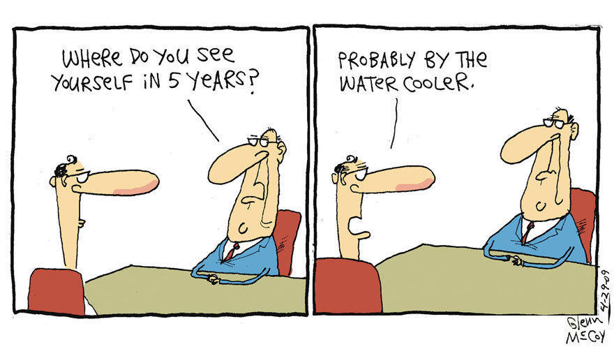

Sex, Laws and Cyberspace Bulletin
No. 1 April 13, 199

THE INTERNET IS A LIBRARY
by Jonathan Wallace

The Internet is the latest in a series of communications revolutions that have initially baffled legislators and judges, who must select the correct analogy to apply in writing new laws, or interpreting old ones.

To pick just one example, when the telephone was introduced, courts struggled with the question whether it was simply a new form of telegraph, or something else entirely.
Today, policy makers are asking what the correct analogy is for the Internet.
The Communications Decency Act (CDA), and its supporters on the religious right and elsewhere, have a quick answer for the question: the Internet is no different than a broadcast medium, like the radio or TV, and should be governed in the same strict way.
The language of the CDA was, in fact, borrowed from FCC regulations pertaining to broadcast.
The correct analogy is something far different: the Internet is a vast library, containing every type of information known to humans.

We can learn a great deal about the way that legislators and judges should deal with the Net by examining the way that libraries function.
A constant criticism levelled at the Internet by CDA proponents is that explicit sexual information is far more freely available to minors there than in a bookstore or library. This sounds reasonable, but is completely untrue.
While free speech proponents have heard this statement many times while maintaining an uncomfortable silence, a look at the actual policies of librarians confirms that most do not consider it their job to police what children read. Instead, the child's parent decides whether or not the child is to have a library card and is responsible for supervising what a child takes out from the library.
One of the most persuasive witnesses to testify in ACLU v. Reno, the lawsuit against the CDA currently pending in federal court in Philadelphia, was Robert B. Croneberger, Director of Pittsburgh's Carnegie Library. (The American Library Association, of which Croneberger is a member, is also a plaintiff in the case.) He testified that the library currently has 277,000 cardholders, one third of them minors.
Croneberger said in the affidavit he filed with the court: "It is the mission of the Carnegie Library of Pittsburgh to provide the widest array of information to the widest possible audience--both adults and minors. To that end, the library makes no distinctions between patrons on the basis of age.
The library does not offer separate library cards for adults and children and the library does not place restrictions on what minors can read, use or borrow in the library."
He observed that the librarian is not competent to judge what children are mature enough to read. "Age must not be a restriction imposed by anyone except the parents of a child, who can judge the maturity of that child."
In court, responding to the government's cross-examination, Croneberger elaborated: "If we as librarians are put in a position of making decisions for other people's children, we would fail miserably."
Croneberger testified that some libraries have created a separate type of library card for juveniles, but that most have not. Within days after his testimony in court, I spotted the following in The Brooklyn Heights Paper, my community newspaper:
"After months of wrangling, the Brooklyn Public Library has finally decided to give an inch in the debate over whether minors should be allowed access to R-rated videos.

"The new policy, adopted by the BPL board earlier this month, will allow parents to obtain restricted library cards for children younger than 13 years of age. The card would prohibit children from borrowing any adult material, be it movies, research material, or Shakespeare's plays."
The contrast to the CDA is interesting. Nobody is burning any books, or even removing them from the library shelves. Instead, the library will continue to contain every conceivable kind of information, including works on sex. Some libraries--like the Brooklyn Public library--will simply not let children with the juvenile card take these works out. Most libraries, as Croneberger testified, will let children look at anything, once their parents have decided to allow them to have a library card.
The CDA is a book-burning law. The prison terms and fines it provides for are very specific, while its defenses--that an information provider tried to use "reasonable and effective" means to prevent children from accessing the material--are very vague. This means that a provider feeling the chilling effect of the law is much safer deleting information from the Internet (the equivalent of burning a book) than relying on a vague defense.
Nevertheless, CDA proponents point to the "reasonable and effective" measures defense as proof that the CDA, like the Brooklyn Public Library's new rule, merely governs who can receive material, but does not lead to its destruction. However, all prior indecency laws are extremely specific about their "safe harbors". Television and radio can safely broadcast indecent material after ten p.m. 900 line providers need not fear prosecution so long as they take a credit card from the caller. By contrast, nothing in the CDA spells out what an online information provider can do to avoid getting in trouble.
Advocates of the CDA want to have it both ways. Even as they argue to the Philadelphia court that the vague safe harbor makes the CDA a "narrowly tailored" law, and therefore constitutional, they have been loud and insistent that no form of regulation short of electronic "book-burning" will protect minors.
Senators James Exon, Dan Coats and Charles Grassley--the CDA's three biggest Senate advocates-- repeatedly said during the Senate debate in June 1995 that children could outwit any technical protection available. Neatly summarizing these arguments is the following excerpt from a FAQ distributed by Reverend Donald Wildmon's American Family Association:

Q: Aren't there 'technical fixes' that are less intrusive than a regulatory or criminal law approach?

A: No. To date, only a few software programs have been released to regulate children's access to pornography, such as SurfWatch and NetNanny. Also, these programs can be bypassed by users with a good knowledge of the Internet and some technical sophistication. Even if better technical solutions become available, this approach is inadequate in and of itself because: children can walk down the street to another computer; parents' technical ability often pales in comparison to their children's expertise; pornographers aren't legally discouraged from peddling their materials to children.

Rather than listening to what CDA proponents tell us, or tell the court, we should listen to what they tell one another. Prosecutors will later argue that virtually any form of control used by information providers was not "reasonable" or "effective", thus sending them to prison despite their extensive efforts to seek a safe harbor.
The CDA was invented by people who believe that some books should also be banned. The day the CDA passed, Senator Coats indiscreetly commented that certain portions of Catcher in the Rye would (and should) be illegal under the new law if posted online.
The CDA's most vocal proponents on the religious right have been involved in numerous efforts to ban books from school libraries. If the Philadelphia court fails to recognize that the Internet is a vast library, it will open the door to radical censorship. It will also allow a preposterous distinction to be drawn between text on paper and electronic text, between Catcher in the Rye in your library and on the Internet.

But if the judges apply the right analogy and recognize that the Internet is a library, they will ensure the survival of the fearless freedom of speech into the 21st century.